Safar · Travel Planner
Safar
One shared trip for Muslim travellers and mixed groups.
Team Ds Gang
Chong Pohyi · Teoh Xi Xian · Tan Wei Feng
Chong Pohyi · Teoh Xi Xian · Tan Wei Feng
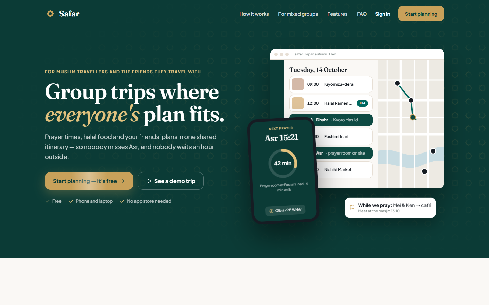
Live Safar guest trip
CodeNection 2026 · Travel Planner
One shared trip for Muslim travellers and mixed groups.
One shared trip for Muslim travellers and mixed groups.

The problem
A restaurant choice can exclude a member.
A prayer needs a time window and a nearby place.
A majority vote cannot settle every strict constraint.
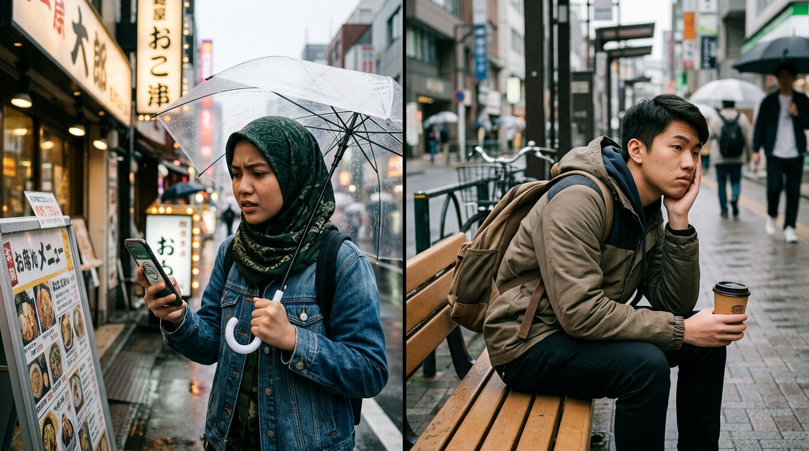
Market opportunity · launch model
Traveler pain
Prayer timing, food evidence and mixed-group choices sit in separate tools.
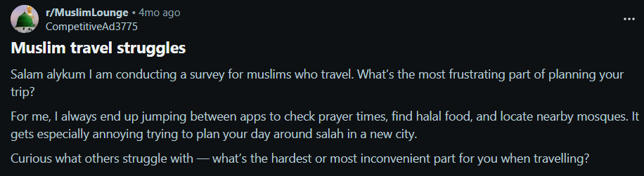
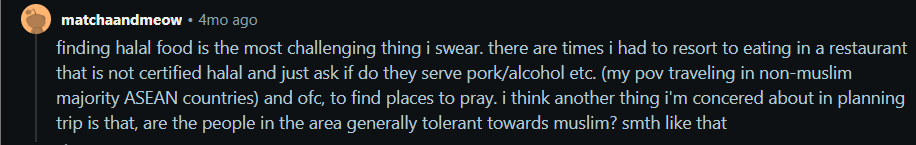
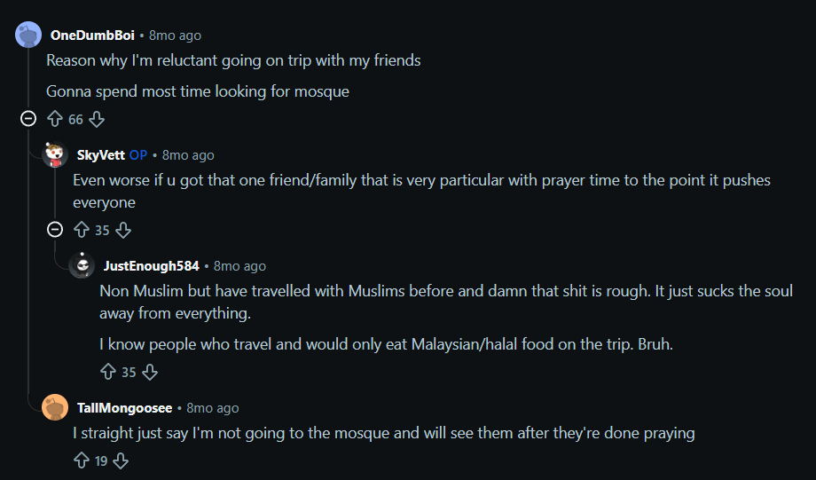
Original prototype figures; source and method were not included.
The market gap
Discovery, planning and group decisions are split across apps.
| Tool | Halal Radar | Prayer Sync | Group Planning | AI Conflict Resolve | Doc Vault |
|---|---|---|---|---|---|
| Safar | Live evidence | Local times | Shared trip | Review a split | AI field check |
| Wanderlog | — | — | Yes | — | Manual |
| HalalTrip | Static DB | — | — | — | — |
| WhatsApp + Excel | — | Manual | Manual | — | — |
From problem to solution
Make prayer windows visible in the day plan; show nearby facilities when available.
Show nearby results with source-aware labels and uncertainty.
Offer a middle ground or a short split with a regroup point for the group to review.

How mixed groups move
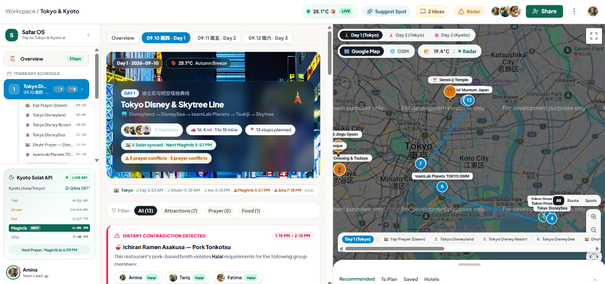
The core engine
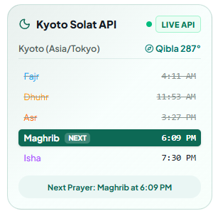
Local prayer calculations make time windows visible; nearby facilities and parallel activity are reviewable.
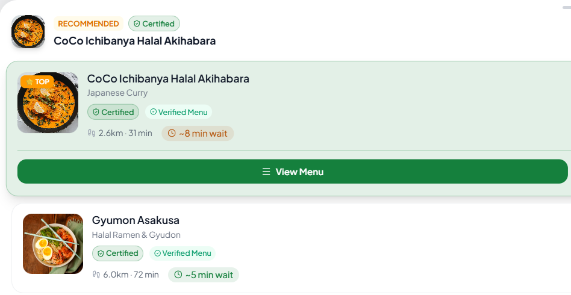
Nearby food results show source and uncertainty; confirm strict requirements with the venue.
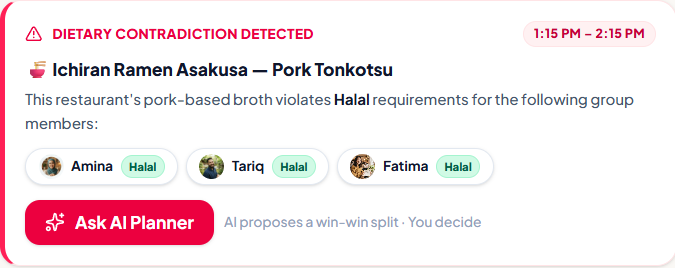
A dietary warning can lead to an alternative or reviewed split with a regroup point.
Supporting features
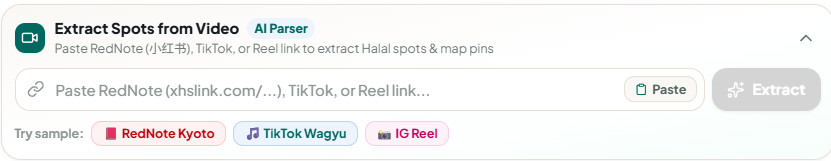
Supported social links can produce candidate places for review.
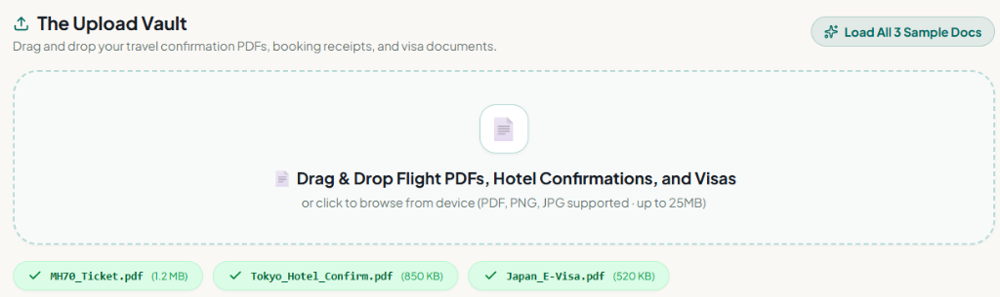
Extracted booking fields can reveal gaps; travellers confirm fields and requirements.
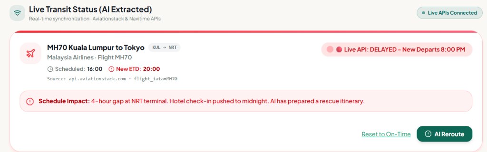
Configured flight checks or weather alerts can raise a report and proposed resync.
Live product demo
Live walkthrough
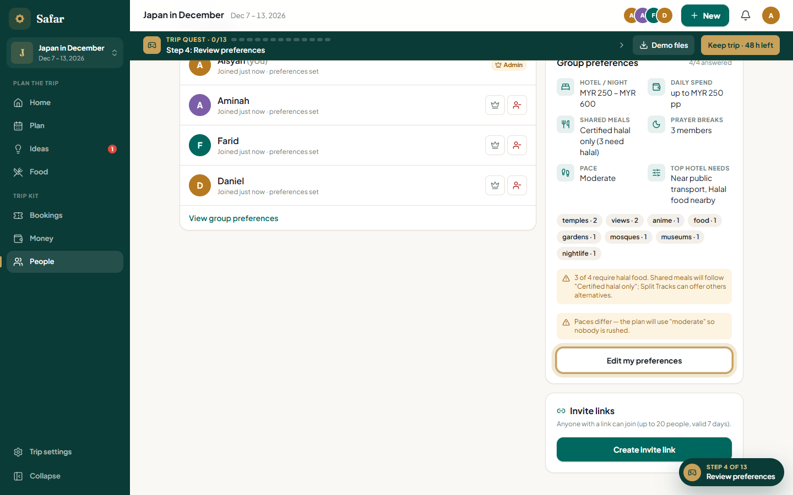
Members record food, prayer, pace and budget needs. Fixed bookings anchor later changes.
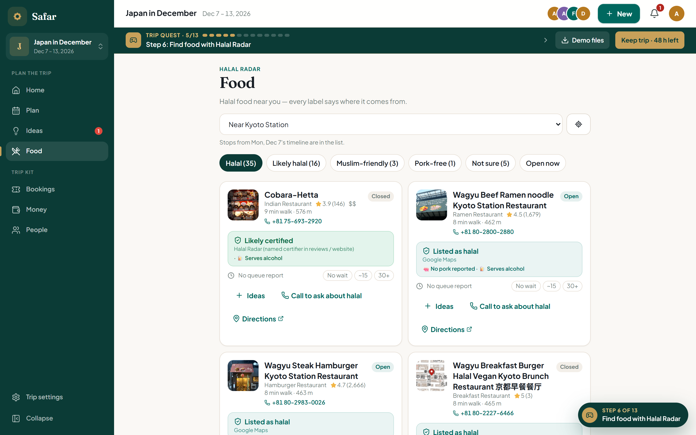
Search near the day's stops; compare listed, likely or unchecked evidence and verify when needed.
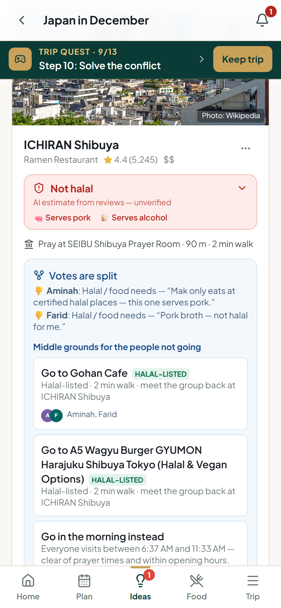
Review disagreement, the dietary constraint, nearby middle ground and a possible regroup plan.
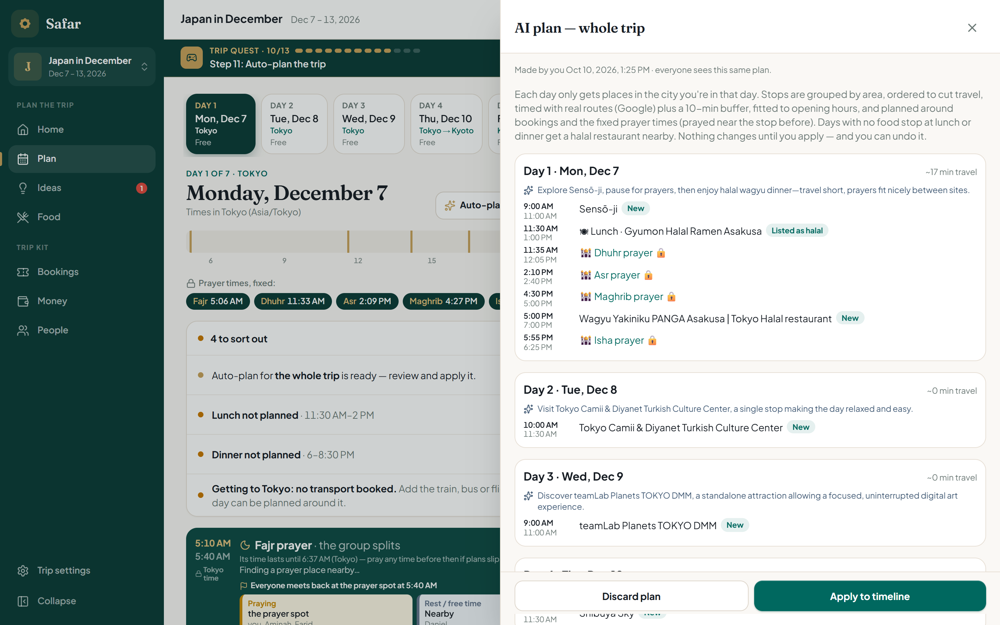
Preview accepted stops around bookings, meals, travel buffers and prayer windows; apply only after review.
Q&A reference
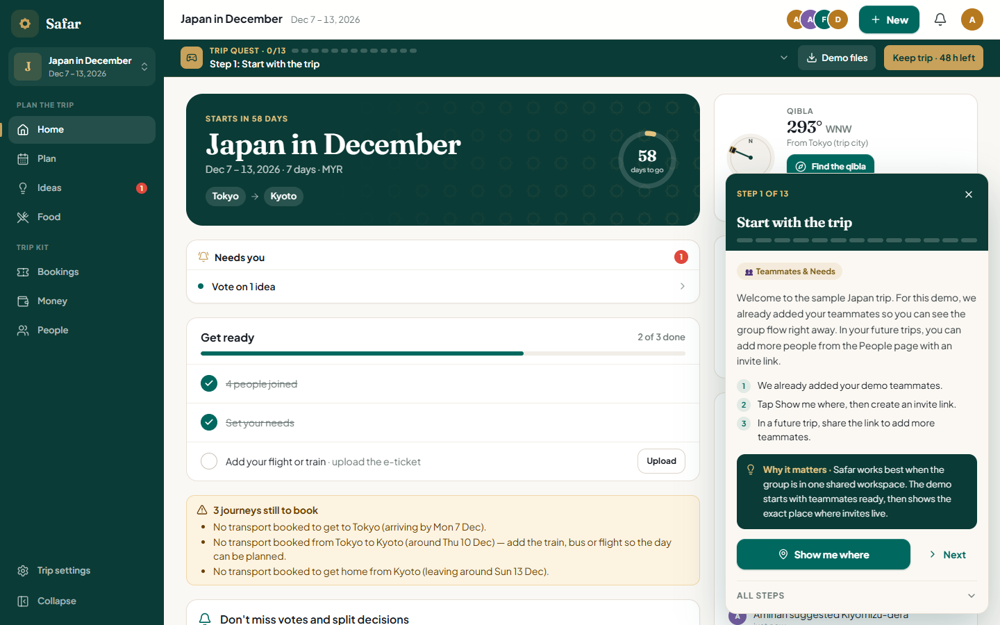
Q&A reference
Public app and guest demo
Trip changes sync for members
Food labels, documents and resync stay reviewable
Thank you
One trip, with member needs visible before the group commits.
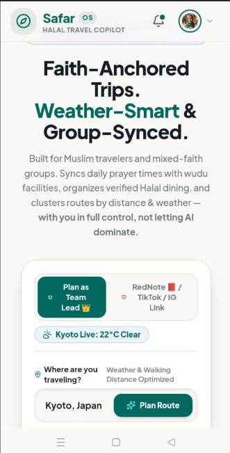